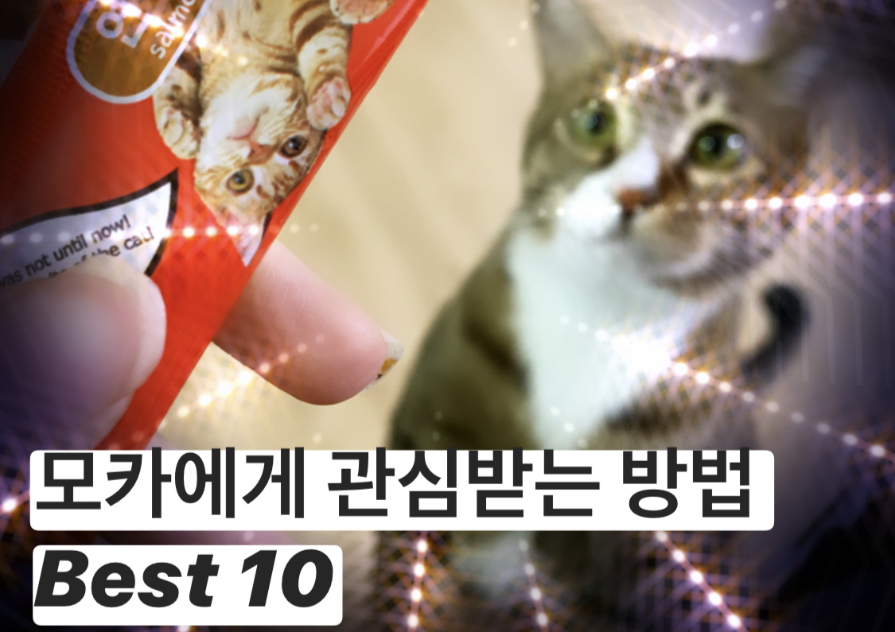
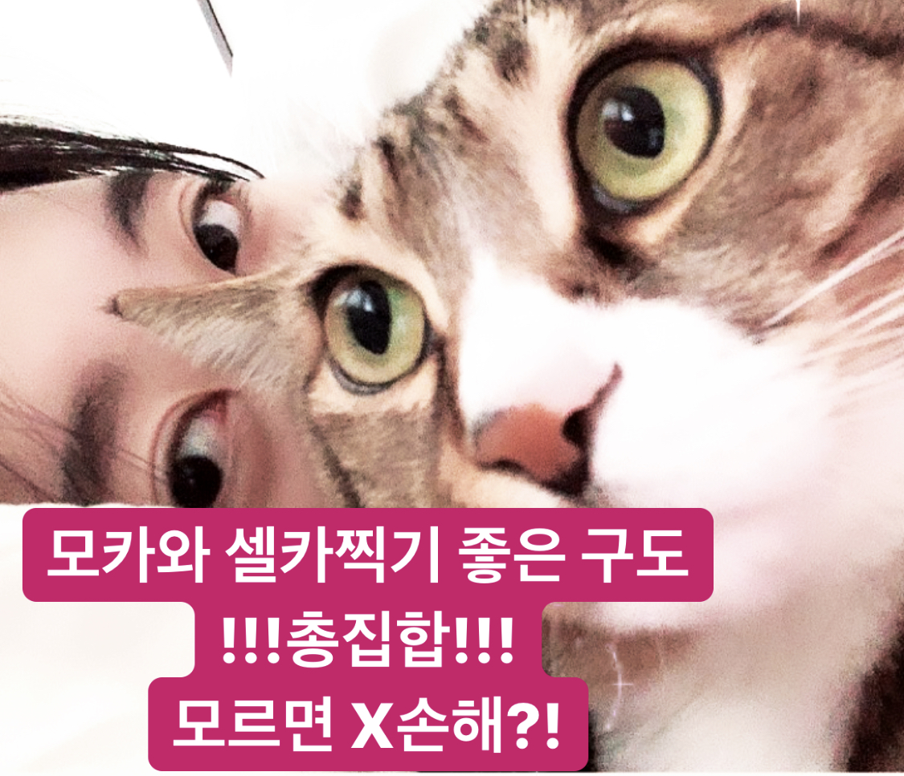
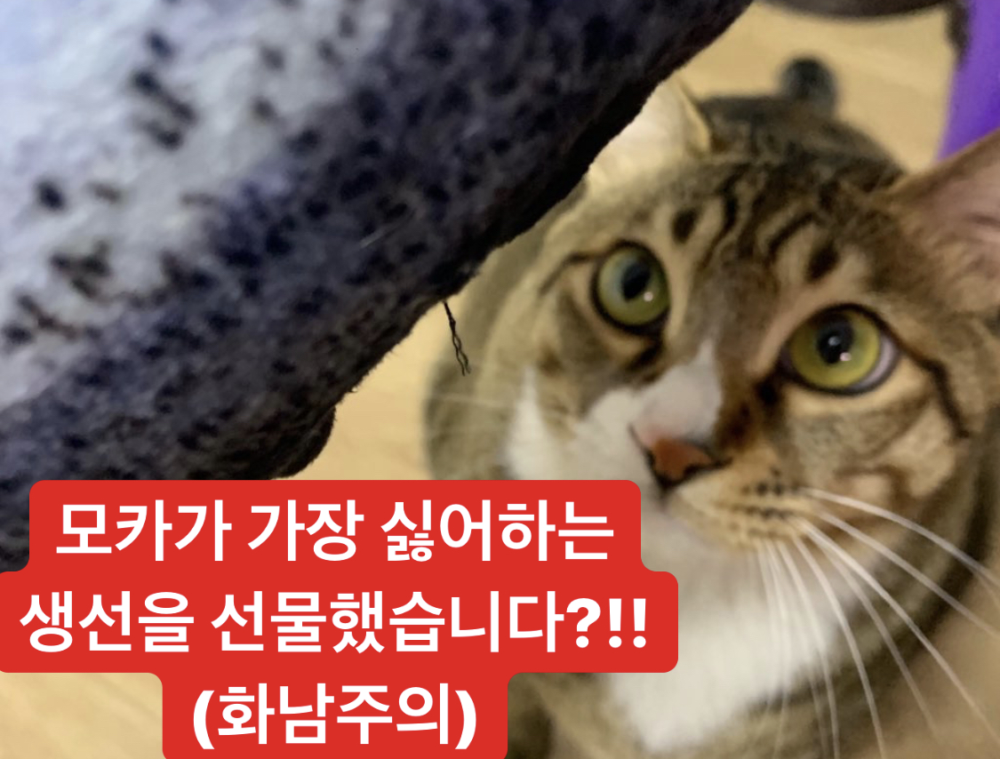

모카롱의 일상
1M subscribers
-
모카에게 관심받는 방법 Best 10 | 당신이 고양이에게 인기 없는 이유 + 현업 집사의 꿀팁 대방출★ 모카롱의 일상 82K Views
-
모카와 사진찍기 좋은 구도, 포즈, 방법 유인책까지? : 고양이와 손쉽게 인생샷 건지기! 집사들이여 냥생샷에 도전하라! 모카롱의 일상 75K Views
-
생선을 싫어하는 고양이에게 생선을 선물해보았습니다. 모카의 반응은? | 생선을 싫어하는 고양이가 있다? : 우리집 주인님이 생선을 싫어하는 이유 + 수의사 인터뷰 모카롱의 일상 100K Views